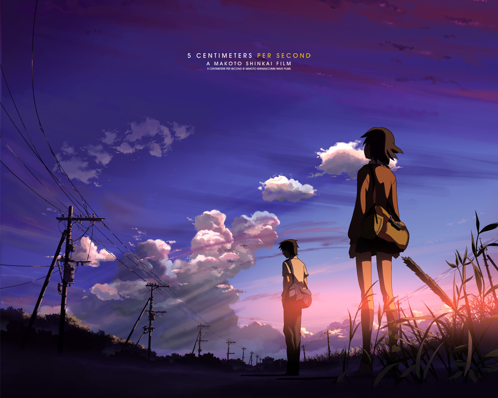

Romance anime:
5cm Per Second (2007)

I Want to Eat Your Pancreas (2017)
Genre: Romance, Slice of Life
5cm Per Second is most definitely a 10/10 rating. The movie is named 5 Centimeters Per
Second for the speed at which cherry blossom petals fall, petals being a metaphorical
representation of humans, reminiscent of the slowness of life and how people often start
together but slowly drift into their separate ways. It is a story centered around the lives of a
boy named Takaki and a girl named Akari. Up to Elementary school, these two got along well
and promised to be together forever, as they were the best of friends. However, by middle
school, Akari switches schools. Being young and naive, the two believe they will still be
together forever despite the distance between them. As they grow older, from middle school
age into adult hood, they grow further and further apart, life cirumstances and the world
itself seems to be against their love/ childhood promise of being together forever. They cope
with the loneliness and distance in entirely different ways.

Genre: Romance, Tragedy, Slice of Life
Do not let the title of this anime prevent you from watching it. It is a definite 10/10 rating.
This story follows two high school students who are polar opposites of one anoter. Haruki is a
young man who closes himself off from others and cares very little, if it all, for others. Haruki
prefers to bury his head in books rather than interact with others. Sakura is a young woman
who attends the same high school as him and she is the exact opposite: she is a ray of
sunshine around others and doesn't care for reading nearly as much as Haruki. Sakura is
dying due to some disease in her pancreas, and does not have long to live. Her entire family
treats her differently knowing that she is soon to die, so Sakura decides to not tell any of her
friends at school that she is soon going to die. Sakura does this knowing that her friends will
distance themselves just as her family did upon finding out that she is soon to die. Sakura
only has her diary to confide in: she just wants people to treat her normally as they used to
and not have to hide her pancrea disease from anyone. One day at school, Haruki saw that
Sakura accidentally left her diary behind, so Haruki decided to read a few pages of Sakura's
diary and discovered that she would soon die. Haruki didn't even believe it to be true. Sakura
told Haruki that she intended for him to read it and she was glad that Haruki didn't seem to
think that she was going to die soon. Sakura was glad that Haruki didn't seem to
think that she was soon to die because she wanted to spend her remaining time with
someone who would treat her as a normal person for the final days of her life. But as Sakura
spends time more time with Haruki, Haruki starts to care for her and his concern for her
health grows greater.